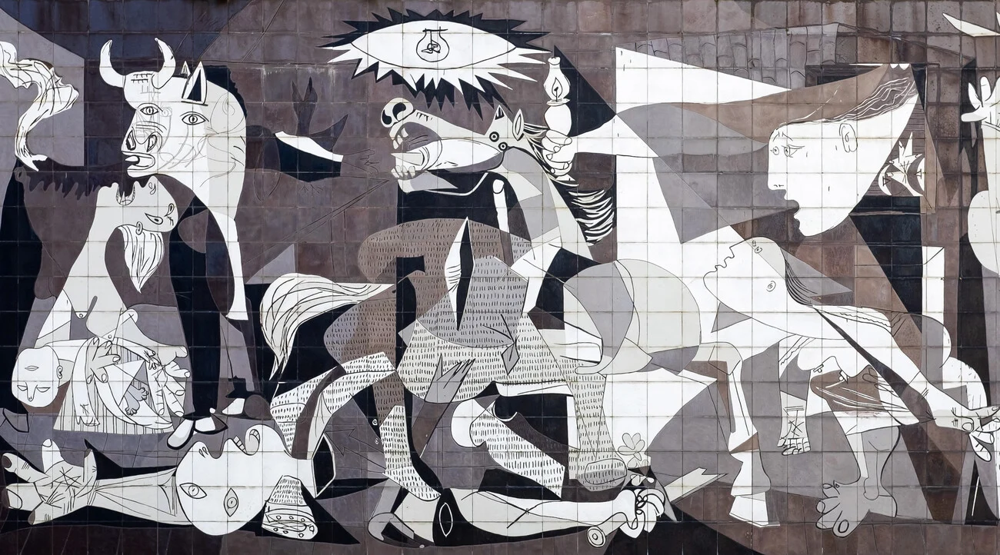
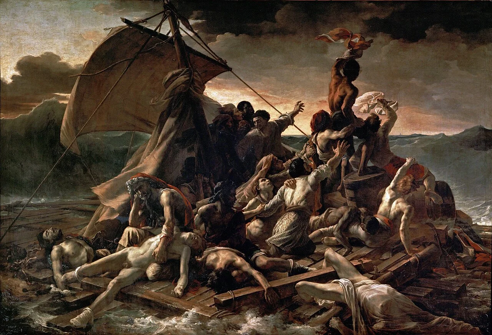
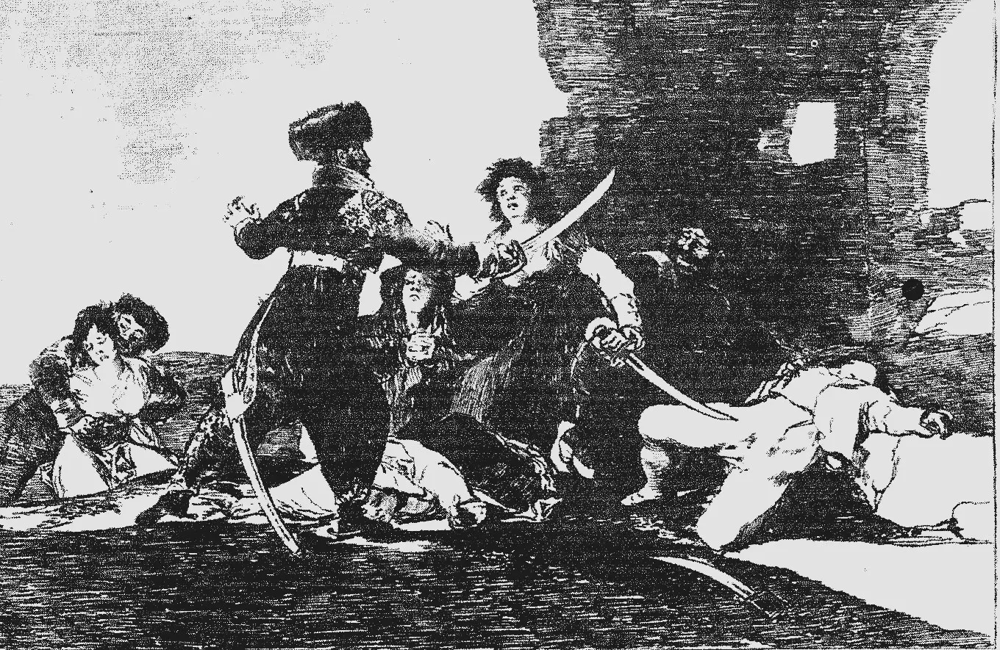
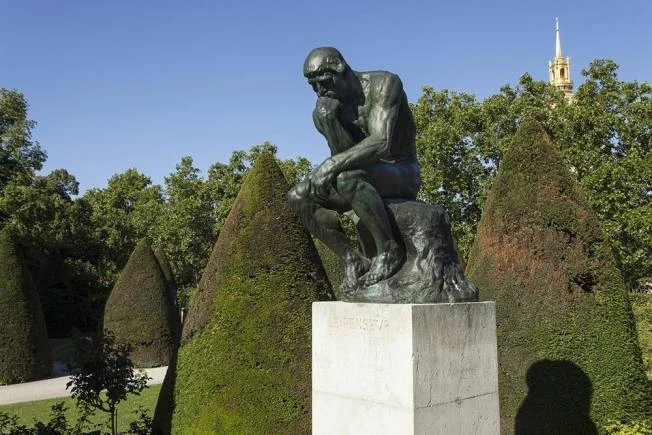
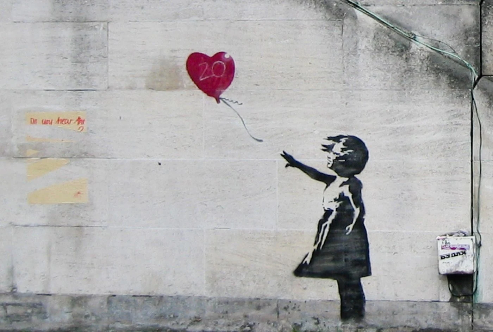

À découvrir · Œuvre n° 1
Guernica
Pablo Picasso · 1937 · Peinture à l'huile, cubisme et expressionnisme
Face à une violence qui frappe sans distinction, la douleur singulière de chaque visage reste la dernière marque de l'humain, et l'art son témoin.
Lire la ficheGuerre et violence de masseArt engagé et témoignageCompassion et mémoire
Toutes les œuvres
01
Guernica
Pablo Picasso · 1937 · Peinture à l'huile, cubisme et expressionnisme
Face à une violence qui frappe sans distinction, la douleur singulière de chaque visage reste la dernière marque de l'humain, et l'art son témoin.
✓ Vue
02
 Le Cri
Edvard Munch · 1893 · Tempera et crayon, expressionnisme
Seul parmi les autres, sans danger visible, l'homme moderne découvre une angoisse sans objet : être humain, c'est aussi pouvoir être submergé par ce que l'on ressent.
✓ Vue
05
Le Cri
Edvard Munch · 1893 · Tempera et crayon, expressionnisme
Seul parmi les autres, sans danger visible, l'homme moderne découvre une angoisse sans objet : être humain, c'est aussi pouvoir être submergé par ce que l'on ressent.
✓ Vue
05

Le Radeau de la Méduse Théodore Géricault · 1818-1819 · Peinture à l'huile, romantisme Abandonnés par ceux qui devaient les protéger, des hommes glissent vers l'inhumain, mais un bras tendu vers l'horizon suffit à dire que l'humanité tient encore. ✓ Vue 03
Les Désastres de la guerre Francisco de Goya · 1810-1815 · Eau-forte et aquatinte La guerre ne fait pas des héros mais des bourreaux et des victimes, dans les deux camps : l'art n'a plus à la glorifier, seulement à dire « je l'ai vu ». ✓ Vue 04
Le Cri
Edvard Munch · 1893 · Tempera et crayon, expressionnisme
Seul parmi les autres, sans danger visible, l'homme moderne découvre une angoisse sans objet : être humain, c'est aussi pouvoir être submergé par ce que l'on ressent.
✓ Vue
05

Le Penseur Auguste Rodin · 1880-1904 · Sculpture en bronze Penser n'est pas le privilège d'un esprit détaché du corps : c'est un effort de tout l'être, par lequel l'homme regarde sa condition en face sans pouvoir lui échapper. ✓ Vue 06
Girl with Balloon Banksy · 2002 · Pochoir, street art Ce que l'on aime nous échappe, et l'humanité tient dans la main tendue vers lui ; mais l'image, devenue marchandise, montre que même l'espoir peut être acheté. ✓ Vue
07
Migrant MotherDorothea Lange · à venir
08
La fillette au napalmNick Ut · à venir